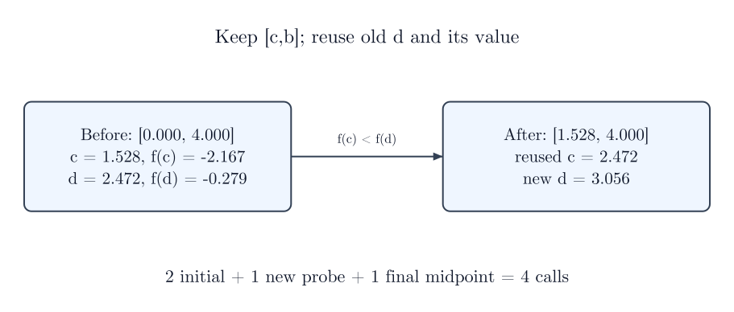
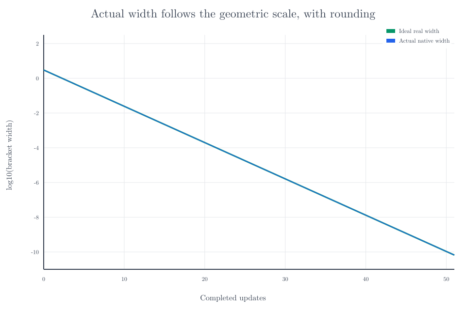
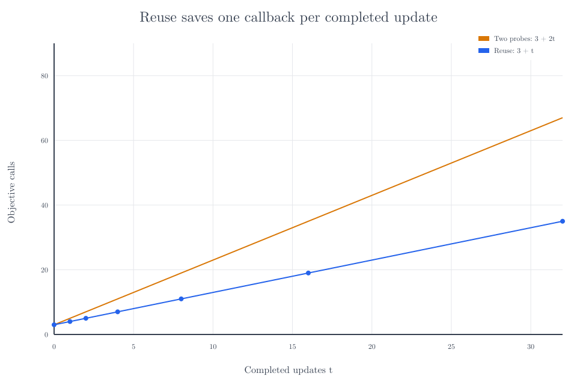
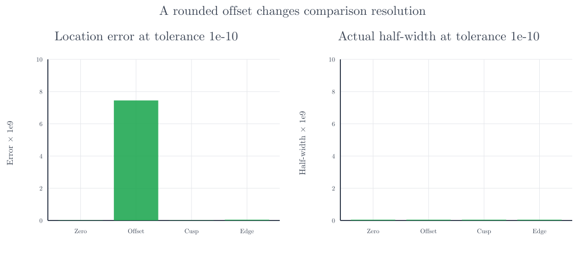
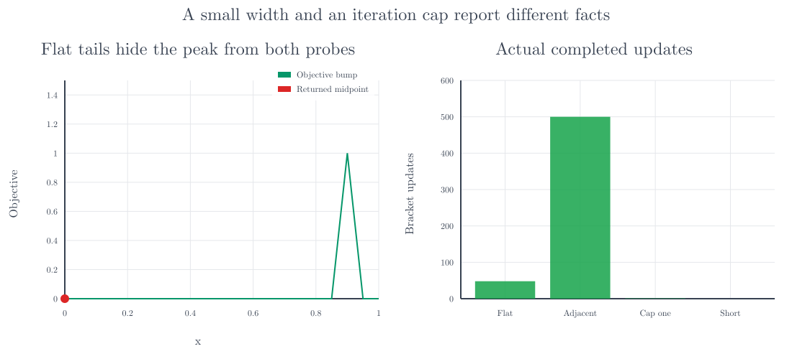
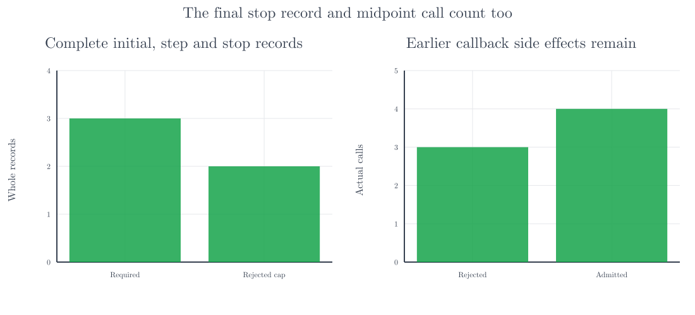

Golden-section search: reuse a probe, check the bracket
Abstract
A scalar objective can be expensive to evaluate even when its derivative is unavailable. Given a finite interval, we want a location with a large objective value while controlling the number of evaluations. Golden-section search reuses one interior probe whenever it discards part of the interval. This report derives the fixed-ratio contraction, follows actual native search states, and distinguishes a small bracket from an accurate maximizer. Rounded objective values, flat tails and adjacent floating-point endpoints provide explicit counterexamples to unconditional accuracy claims. Native traces expose complete execution events and callback counts with an online record limit.
See one actual reuse before the formula
On [0,4], the objective −(x−3)² has its unique maximum at 3. Two initial probes give different values, so the search can discard the left part. The surviving right probe becomes the new left probe, carrying its cached value. The new right probe costs one fresh evaluation. The final midpoint is evaluated once more, even in this deliberately one-update run.
#include <dm/dm.hpp>
int main() {
std::filesystem::create_directories("build");
const auto t = dm::algorithms::golden_section_trace([](double x) {
return -(x - 3) * (x - 3);
}, 0, 4, 0, 1, 3);
const auto &e = t.events[1];
std::print("| state | a | b | c | d | f(c) | f(d) |\n| --- | ---: | ---: | ---: | ---: | ---: | ---: " "|\n");
for (int j = 0; j < 2; ++j) {
const auto &q = j ? e.after : e.before;
std::print("| {} | {:.9f} | {:.9f} | {:.9f} | {:.9f} | {:.9f} | {:.9f} |\n",
j ? "After" : "Before", q.a, q.b, q.c, q.d, q.fc, q.fd);
}
std::print("\nKept right {}; reused old d as new c {}; cached value unchanged {}; actual callbacks {}; " "complete records {}; stop {}. Final midpoint {:.9f}, value {:.9f}.\n",
e.kept_right, e.after.c == e.before.d, e.after.fc == e.before.fd,
t.run.evaluations, t.events.size(),
dm::algorithms::golden_stop_name(t.run.stop),
t.run.result.argmax, t.run.result.value);
dm::graphics::Diagram d(65, 1050);
dm::graphics::DiagramNodeStyle box;
box.width = 5.1;
box.height = 2.1;
box.font_size = 21;
d.node("old", {0, 0},
std::format("Before: [{:.3f}, {:.3f}]\nc = {:.3f}, f(c) = {:.3f}\nd = {:.3f}, f(d) = {:.3f}",
e.before.a, e.before.b, e.before.c, e.before.fc,
e.before.d, e.before.fd), box).node(
"new", {8, 0},
std::format("After: [{:.3f}, {:.3f}]\nreused c = {:.3f}\nnew d = {:.3f}",
e.after.a, e.after.b, e.after.c, e.after.d), box).edge(
"old", "new", "f(c) < f(d)").text({4, 2.3},
"Keep [c,b]; reuse old d and its value",
24).text({4, -2.3},
std::format(
"2 initial + 1 new probe + 1 final midpoint = {} calls",
t.run.evaluations), 22).save_svg("build/golden_reuse.svg");
if (!e.kept_right || e.after.c != e.before.d || t.run.evaluations != 4)
throw std::runtime_error("actual reuse");
}| state | a | b | c | d | f(c) | f(d) |
|---|---|---|---|---|---|---|
| Before | 0.000000000 | 4.000000000 | 1.527864045 | 2.472135955 | -2.167184270 | -0.278640450 |
| After | 1.527864045 | 4.000000000 | 2.472135955 | 3.055728090 | -0.278640450 | -0.003105620 |
Kept right true; reused old d as new c true; cached value unchanged true; actual callbacks 4; complete records 3; stop iteration_limit. Final midpoint 2.763932023, value -0.055728090.

Why this ratio permits reuse
Let ρ=(√5−1)/2 and W=b−a. The symmetric probes are c=b−ρW and d=a+ρW. If f(c)<f(d), strict increase up to a single peak and strict decrease after it exclude any maximum to the left of c. Retain [c,b]. If f(c)>f(d), retain [a,d]. Under those same strict assumptions, equal values straddle the peak; the native tie rule retains [a,d], which still contains it in exact arithmetic. This implementation uses that one-sided tie rule and never evaluates endpoints. It does not check the assumptions.
For the retained interval [c,b], the new left probe must equal old d. Substituting the new width ρW yields
The other branch is symmetric. Thus, in real arithmetic,
For 0<ε<W0, the ideal required number of updates is the ceiling of log(W0/ε)/log(1/ρ). This is linear convergence of interval width, not a promise of that many correct decimal digits in the returned location. With fixed-cost evaluations the selected work is O(t), and ordinary solver storage is constant. Expensive or stateful objectives have their own costs.
Follow the original sine example without replaying its search
The original objective is sin(x)−0.1(x−1.5)² on [0,3]. Its second derivative is −sin(x)−0.2<0 there, so its unique maximum solves cos(x)−0.2(x−1.5)=0. A separate native bisection of that derivative computes the comparison reference below, near 1.5589967108207259. An independent 80-digit calculation verifies this reference; it is not inferred from the objective-value comparisons. The native solver needs 51 updates at width tolerance 1e−10, but its returned location differs from this root by more than 1e−8. The small bracket no longer contains the mathematical maximizer after rounded values cease to distinguish the probes.
#include <dm/dm.hpp>
int main() {
std::filesystem::create_directories("build");
auto f = [](double x) { return std::sin(x) - .1 * (x - 1.5) * (x - 1.5); };
const auto t = dm::algorithms::golden_section_trace(f, 0, 3, 1e-10);
const auto derivative = dm::algorithms::bisection_trace([](double x) {
return std::cos(x) - 0.2 * (x - 1.5);
}, 0, 3, dm::algorithms::BisectionOptions{1e-15, 0, 200});
if (!derivative.result.converged)
throw std::runtime_error("derivative reference failed");
const double reference = derivative.result.root;
const double rho = (std::sqrt(5.) - 1) / 2;
std::vector<double> iteration, actual, ideal;
std::print("| update | actual width | ideal real width | actual calls so far |\n| ---: | ---: | ---: | " "---: |\n");
for (const auto &e : t.events)
if (e.kind != dm::algorithms::GoldenEventKind::stop) {
const double w =
e.after.b - e.after.a, predicted =
3 * std::pow(rho, e.iteration);
iteration.push_back(e.iteration);
actual.push_back(std::log10(w));
ideal.push_back(std::log10(predicted));
if (e.iteration % 5 == 0 || e.iteration == t.run.result.iterations)
std::print("| {} | {:.12e} | {:.12e} | {} |\n", e.iteration, w,
predicted, e.evaluations);
}
const auto &q = t.run.final_state;
std::print("\nReturned x {:.17g}, value {:.17g}; updates {}; total actual calls {}; retained records " "{}; stop {}. Derivative reference {:.17g}; absolute error {:.12e}; final half-width " "{:.12e}; reference inside final bracket {}.\n",
t.run.result.argmax, t.run.result.value,
t.run.result.iterations, t.run.evaluations, t.events.size(),
dm::algorithms::golden_stop_name(t.run.stop), reference,
std::abs(t.run.result.argmax - reference), (q.b - q.a) / 2,
q.a <= reference && reference <= q.b);
std::print("\nSeparate derivative solve: {} callback evaluations; recorded radius {:.3e}.\n",
derivative.evaluations, derivative.radius);
auto p = dm::graphics::RPlot::create();
p.line(iteration, ideal, "ideal", {5, 150, 105}, 3).line(iteration,
actual,
"actual",
{37, 99, 235},
1.5).legend(
{"Ideal real width", "Actual native width"},
{{5, 150, 105}, {37, 99, 235}}).title("Actual width follows the geometric scale, with rounding").xlab("Completed updates").ylab("log10(bracket width)").x_limits(0, 51).y_limits(-11, 2.5).save_svg("build/golden_original.svg");
if (t.run.result.iterations != 51 || t.run.evaluations != 54 ||
q.a <= reference && reference <= q.b)
throw std::runtime_error("original numerical witness");
}| update | actual width | ideal real width | actual calls so far |
|---|---|---|---|
| 0 | 3.000000000000e+00 | 3.000000000000e+00 | 2 |
| 5 | 2.705098312484e-01 | 2.705098312484e-01 | 7 |
| 10 | 2.439185626735e-02 | 2.439185626735e-02 | 12 |
| 15 | 2.199412307572e-03 | 2.199412307572e-03 | 17 |
| 20 | 1.983208840557e-04 | 1.983208840557e-04 | 22 |
| 25 | 1.788258295976e-05 | 1.788258295965e-05 | 27 |
| 30 | 1.612471499657e-06 | 1.612471499567e-06 | 32 |
| 35 | 1.453964644238e-07 | 1.453964644136e-07 | 37 |
| 40 | 1.311039099505e-08 | 1.311039101754e-08 | 42 |
| 45 | 1.182163256175e-09 | 1.182163220585e-09 | 47 |
| 50 | 1.065956212187e-10 | 1.065955911029e-10 | 52 |
| 51 | 6.587974610284e-11 | 6.587969835247e-11 | 53 |
Returned x 1.5589966972575355, value 0.99958232415037962; updates 51; total actual calls 54; retained records 53; stop width. Derivative reference 1.5589967108207266; absolute error 1.356319101475e-08; final half-width 3.293987305142e-11; reference inside final bracket false.
Separate derivative solve: 54 callback evaluations; recorded radius 6.661e-16.

The rounded original display, “1.559”, hides this distinction. Neither the old result layout nor the new diagnostics claim an accuracy certificate. The final value is a fresh midpoint evaluation, not the largest cached sample. Callback exceptions propagate, and the callable is passed by value; captured references can still change external state.
Count callbacks, including initialization and the final midpoint
Two initial evaluations plus t fresh probes plus one midpoint give t+3 actual calls. The alternative below is a hypothetical count for recomputing both probes at every step; that search is not executed. These counts measure neither machine instructions nor elapsed time. An update limit of zero still makes three calls; it does not skip evaluating the objective.
#include <dm/dm.hpp>
int main() {
std::filesystem::create_directories("build");
std::vector<double> update, actual, recompute;
std::print("| requested update cap | completed updates | predicted calls | actual calls | hypothetical " "two-new-probe calls |\n| ---: | ---: | ---: | ---: | ---: |\n");
for (int cap : {0, 1, 2, 4, 8, 16, 32}) {
std::size_t counted = 0;
auto r = dm::algorithms::golden_section_run([&](double x) {
++counted; return -(x - .3) * (x - .3);
}, 0, 1, 0, cap);
const auto predicted =
std::size_t(r.result.iterations) + 3, hypothetical =
2 * std::size_t(r.result.iterations) + 3;
std::print("| {} | {} | {} | {} | {} |\n", cap, r.result.iterations,
predicted, r.evaluations, hypothetical);
update.push_back(r.result.iterations);
actual.push_back(r.evaluations);
recompute.push_back(hypothetical);
if (r.evaluations != counted || counted != predicted)
throw std::runtime_error("callback count");
}
auto p = dm::graphics::RPlot::create();
p.line(update, recompute, "hypothetical", {217, 119, 6}, 2).line(
update, actual, "actual", {37, 99, 235}, 2).points(update, actual,
"actual",
{37, 99, 235}, 4).legend({"Two probes: 3 + 2t", "Reuse: 3 + t"}, {{217, 119, 6}, {37, 99, 235}}).title("Reuse saves one callback per completed update").xlab("Completed updates t").ylab("Objective calls").x_limits(0, 32).y_limits(0, 90).save_svg("build/golden_work.svg");
}| requested update cap | completed updates | predicted calls | actual calls | hypothetical two-new-probe calls |
|---|---|---|---|---|
| 0 | 0 | 3 | 3 | 3 |
| 1 | 1 | 4 | 4 | 5 |
| 2 | 2 | 5 | 5 | 7 |
| 4 | 4 | 7 | 7 | 11 |
| 8 | 8 | 11 | 11 | 19 |
| 16 | 16 | 19 | 19 | 35 |
| 32 | 32 | 35 | 35 | 67 |

Known maxima reveal what a width check can and cannot establish
All four objectives below have known mathematical maxima: the two quadratics and the cusp peak at 0.9, while x peaks at the right endpoint. Adding one to a quadratic changes no mathematical maximizer, but it changes the resolution of its computed values. The table keeps every requested tolerance and prints whether the known peak lies inside the returned bracket. The two panels compare location error and half-width at tolerance 1e−10, with the same scale. The conditional half-width argument cannot be used for rows whose containment check is false.
#include <dm/dm.hpp>
int main() {
std::filesystem::create_directories("build");
const std::vector<std::string> label{"Zero", "Offset", "Cusp", "Edge"};
std::vector<double> errors, halfwidths;
std::print("| objective | tolerance | updates | absolute location error | final half-width | true peak " "inside | stop |\n| --- | ---: | ---: | ---: | ---: | --- | --- |\n");
for (int kind = 0; kind < 4; ++kind)
for (double tol : {1e-4, 1e-8, 1e-10, 1e-14}) {
auto f = [&](double x) {
if (kind == 0)
return -(x - .9) * (x - .9);
if (kind == 1)
return 1 - (x - .9) * (x - .9);
if (kind == 2)
return -std::abs(x - .9);
return x;
};
const auto r = dm::algorithms::golden_section_run(f, 0, 1, tol);
const double truth =
kind == 3 ? 1 : .9, err =
std::abs(r.result.argmax - truth), half =
(r.final_state.b - r.final_state.a) / 2;
std::print("| {} | {:.0e} | {} | {:.12e} | {:.12e} | {} | {} |\n",
label[kind], tol, r.result.iterations, err, half,
r.final_state.a <= truth && truth <= r.final_state.b,
dm::algorithms::golden_stop_name(r.stop));
if (tol == 1e-10) {
errors.push_back(1e9 * err);
halfwidths.push_back(1e9 * half);
}
}
auto a =
dm::graphics::RPlot::barplot(errors, label), b =
dm::graphics::RPlot::barplot(halfwidths, label);
a.title("Location error at tolerance 1e-10").xlab("").ylab("Error × 1e9").y_limits(0, 10);
b.title("Actual half-width at tolerance 1e-10").xlab("").ylab(
"Half-width × 1e9").y_limits(0, 10);
dm::graphics::RLayout::create(1, 2).add(a).add(b).size(1100, 500).title(
"A rounded offset changes comparison resolution").fit_panels().save_svg("build/golden_accuracy.svg");
}| objective | tolerance | updates | absolute location error | final half-width | true peak inside | stop |
|---|---|---|---|---|---|---|
| Zero | 1e-04 | 20 | 1.381747836915e-05 | 3.305348067595e-05 | true | width |
| Zero | 1e-08 | 39 | 1.748052258499e-09 | 3.535509718322e-09 | true | width |
| Zero | 1e-10 | 48 | 1.421252004974e-11 | 4.651184992710e-11 | true | width |
| Zero | 1e-14 | 67 | 1.554312234475e-15 | 4.996003610813e-15 | true | width |
| Offset | 1e-04 | 20 | 1.381747836915e-05 | 3.305348067595e-05 | true | width |
| Offset | 1e-08 | 39 | 4.448941326451e-09 | 3.535509718322e-09 | false | width |
| Offset | 1e-10 | 48 | 7.450861261304e-09 | 4.651179441595e-11 | false | width |
| Offset | 1e-14 | 67 | 7.450579264656e-09 | 4.996003610813e-15 | false | width |
| Cusp | 1e-04 | 20 | 1.381747836915e-05 | 3.305348067595e-05 | true | width |
| Cusp | 1e-08 | 39 | 1.748052258499e-09 | 3.535509718322e-09 | true | width |
| Cusp | 1e-10 | 48 | 1.421252004974e-11 | 4.651184992710e-11 | true | width |
| Cusp | 1e-14 | 67 | 1.554312234475e-15 | 4.996003610813e-15 | true | width |
| Edge | 1e-04 | 20 | 3.305348067595e-05 | 3.305348067595e-05 | true | width |
| Edge | 1e-08 | 39 | 3.535509662811e-09 | 3.535509718322e-09 | true | width |
| Edge | 1e-10 | 48 | 4.651179441595e-11 | 4.651179441595e-11 | true | width |
| Edge | 1e-14 | 67 | 4.996003610813e-15 | 4.996003610813e-15 | true | width |

Flat tails and floating endpoints are different failure mechanisms
A triangular bump max(0,1−20 abs(x−0.9)) has one peak, but its flat nonmaximum tails violate the strict monotonicity used in the comparison proof. The first two probes both see zero, so the left tie rule discards the true peak. A tiny returned bracket cannot repair that loss. Merely saying “rises then falls” is therefore too weak when it includes flat tails.
At adjacent representable endpoints, new probes can coincide with old points. The solver preserves its original behavior: it reaches the requested iteration limit rather than silently applying a different stagnation rule. Noise and multiple peaks also invalidate the deterministic comparison argument; no robust noisy-optimization claim is made here.
#include <dm/dm.hpp>
int main() {
std::filesystem::create_directories("build");
auto bump = [](double x) {
return std::max(0., 1 - 20 * std::abs(x - .9));
};
const double next = std::nextafter(1., 2.);
std::vector<dm::algorithms::GoldenRun> runs{dm::algorithms::golden_section_run(bump, 0, 1, 1e-10), dm::algorithms::golden_section_run([](double x) {
return x;
}, 1, next, 1e-30), dm::algorithms::golden_section_run([](double x) {
return -(x - .9) * (x - .9);
}, 0, 1, 1e-10, 1), dm::algorithms::golden_section_run([](double x) {
return x;
}, 0, 1, 1, 0)};
const std::vector<std::string> labels{"Flat", "Adjacent", "Cap one", "Short"};
const std::vector<double> truth{.9, next, .9, 1};
std::vector<double> updates;
std::print("| case | returned x | value | final width | updates | calls | true peak inside | stop |\n| " "--- | ---: | ---: | ---: | ---: | ---: | --- | --- |\n");
for (std::size_t i = 0; i < runs.size(); ++i) {
const auto &r = runs[i];
updates.push_back(r.result.iterations);
std::print("| {} | {:.17g} | {:.12g} | {:.12e} | {} | {} | {} | {} |\n",
labels[i], r.result.argmax, r.result.value,
r.final_state.b - r.final_state.a, r.result.iterations,
r.evaluations,
r.final_state.a <= truth[i] && truth[i] <= r.final_state.b,
dm::algorithms::golden_stop_name(r.stop));
}
std::vector<double> x, y;
for (int i = 0; i <= 200; ++i) {
x.push_back(i / 200.);
y.push_back(bump(x.back()));
}
auto a = dm::graphics::RPlot::create();
a.line(x, y, "bump", {5, 150, 105}, 2).points({runs[0].result.argmax},
{runs[0].result.value},
"returned", {220, 38, 38}, 6).legend({"Objective bump", "Returned midpoint"}, {{5, 150, 105}, {220, 38, 38}}).title("Flat tails hide the peak from both probes").xlab("x").ylab("Objective").x_limits(0, 1).y_limits(0, 1.5);
auto b = dm::graphics::RPlot::barplot(updates, labels);
b.title("Actual completed updates").xlab("").ylab("Bracket updates").y_limits(0, 600);
dm::graphics::RLayout::create(1, 2).add(a).add(b).size(1100, 500).title(
"A small width and an iteration cap report different facts").fit_panels().save_svg("build/golden_limits.svg");
if (runs[0].result.value != 0 || runs[1].result.iterations != 500 ||
runs[1].evaluations != 503)
throw std::runtime_error("preserved limitations");
}| case | returned x | value | final width | updates | calls | true peak inside | stop |
|---|---|---|---|---|---|---|---|
| Flat | 4.6511813426375283e-11 | 0 | 9.302362685275e-11 | 48 | 51 | false | width |
| Adjacent | 1 | 1 | 2.220446049250e-16 | 500 | 503 | true | iteration_limit |
| Cap one | 0.69098300562505255 | -0.0436881039375 | 6.180339887499e-01 | 1 | 4 | true | iteration_limit |
| Short | 0.5 | 0.5 | 1.000000000000e+00 | 0 | 3 | true | width |

Bound complete records without replay or hidden callback work
A trace owns H=t+2 complete initial/update/stop records. The default optional quota is one million records; zero disables it while retaining the whole history. Each next record is admitted before its associated callback work. A one-update trace needs three records, including its final stop. Rejecting a cap of two occurs after the two initial and one step callbacks, but before the midpoint callback. Already performed callback side effects cannot be rolled back.
Root/input/callable/ordinary result/final state/constant working storage and allocator overhead are excluded. Records are not numeric entries, bytes or peak RAM. Copying a trace owns independent scalar records; it does not clone external state referenced by the original callable. No callback is retained in the trace.
#include <dm/dm.hpp>
int main() {
std::filesystem::create_directories("build");
int calls = 0;
auto f = [&](double x) {
++calls;
return x;
};
bool rejected = false;
try {
(void) dm::algorithms::golden_section_trace(f, 0, 1, 0, 1, 2);
} catch (const std::length_error &) {
rejected = true;
}
const int rejected_calls = calls;
calls = 0;
auto t = dm::algorithms::golden_section_trace(f, 0, 1, 0, 1, 3);
const int admitted_calls = calls;
auto copy = t;
copy.events[0].after.a = 99;
const bool owned = t.events[0].after.a == 0;
calls = 0;
bool empty_rejected = false;
try {
(void) dm::algorithms::golden_section_trace(f, 0, 1, 1, 0, 1);
} catch (const std::length_error &) {
empty_rejected = true;
}
const int no_step_calls = calls;
calls = 0;
bool invalid = false;
try {
(void) dm::algorithms::golden_section_trace(f, 2, 1, 0, 1, 1);
} catch (const std::invalid_argument &) {
invalid = true;
}
const int invalid_calls = calls;
const auto unlimited =
dm::algorithms::golden_section_trace(f, 0, 1, 0, 3, 0);
bool bad = false;
try {
(void) dm::algorithms::golden_section_search([](double) {
return std::numeric_limits<double>::quiet_NaN();
}, 0, 1);
} catch (const std::domain_error &) {
bad = true;
}
std::print("| admission | required records | rejected quota | rejected | calls before rejection |\n| " "--- | ---: | ---: | --- | ---: |\n| One complete update plus metadata | {} | 2 | {} | {} " "|\n| No-update initial and stop | 2 | 1 | {} | {} |\n",
t.events.size(), rejected, rejected_calls, empty_rejected,
no_step_calls);
std::print("\nAdmitted one-update trace makes {} calls. Zero optional quota retains {} complete " "records. Independent owned copy {}; invalid endpoints rejected {} before {} calls; " "nonfinite objective rejected {}.\n",
admitted_calls, unlimited.events.size(), owned, invalid,
invalid_calls, bad);
auto a =
dm::graphics::RPlot::barplot({double(t.events.size()), 2.},
{"Required", "Rejected cap"});
a.title("Complete initial, step and stop records").xlab("").ylab(
"Whole records").y_limits(0, 4);
auto b =
dm::graphics::RPlot::barplot({double(rejected_calls),
double(admitted_calls)},
{"Rejected", "Admitted"});
b.title("Earlier callback side effects remain").xlab("").ylab("Actual calls").y_limits(0, 5);
dm::graphics::RLayout::create(1, 2).add(a).add(b).size(1100, 500).title(
"The final stop record and midpoint call count too").fit_panels().save_svg("build/golden_controls.svg");
if (!rejected || !empty_rejected || !owned || !invalid || invalid_calls ||
!bad)
throw std::runtime_error("record admission controls");
}| admission | required records | rejected quota | rejected | calls before rejection |
|---|---|---|---|---|
| One complete update plus metadata | 3 | 2 | true | 3 |
| No-update initial and stop | 2 | 1 | true | 2 |
Admitted one-update trace makes 4 calls. Zero optional quota retains 5 complete records. Independent owned copy true; invalid endpoints rejected true before 0 calls; nonfinite objective rejected true.

Nonfinite endpoints/tolerance, reversed intervals and negative update limits are rejected. Absolute tolerance may be zero; equal endpoints are valid and still make three calls. Evaluated nonfinite coordinate arithmetic or objective values throw rather than propagate invalid results. The legacy midpoint expression 0.5(a+b) is preserved, so its sum can overflow even when both endpoints are finite; that case is rejected rather than silently switching formulas.
What this analysis establishes
The shared core now supplies the actual bracket history, so report code presents rather than reconstructs the search. Probe reuse gives one new call per update, with two initialization calls and one final midpoint call. Under strict unimodality, faithful comparisons and exact coordinate arithmetic, the midpoint error is bounded by half the retained width. The observed floating-point and flat-tail counterexamples show why that condition belongs beside the bound. These controlled objectives expose specific mechanisms; an unrelated dataset would not test the solver assumptions.
References and implementation scope
Dimitri P. Bertsekas, Nonlinear Programming, Third Edition, Appendix C.3, pp.812–814, presents strict unimodality and reusable golden probes: [author-hosted appendix](https://web.mit.edu/dimitrib/www/NLP_Appendixes_Refs.pdf). That minimizer includes endpoint checks and a different tie contraction; the native maximizer preserves its original strict branch and one-sided tie rule. The derivation and numerical checks above describe this implementation.
J. Kiefer (1953), “Sequential Minimax Search for a Maximum”, Proceedings of the American Mathematical Society 4(3),502–506, [DOI](https://doi.org/10.2307/2032161), gives the historical sequential minimax context. Its bibliography was verified; the full article was inaccessible and is not claimed as a read implementation source. No finite-budget minimax optimality claim is made for this fixed-ratio native routine.